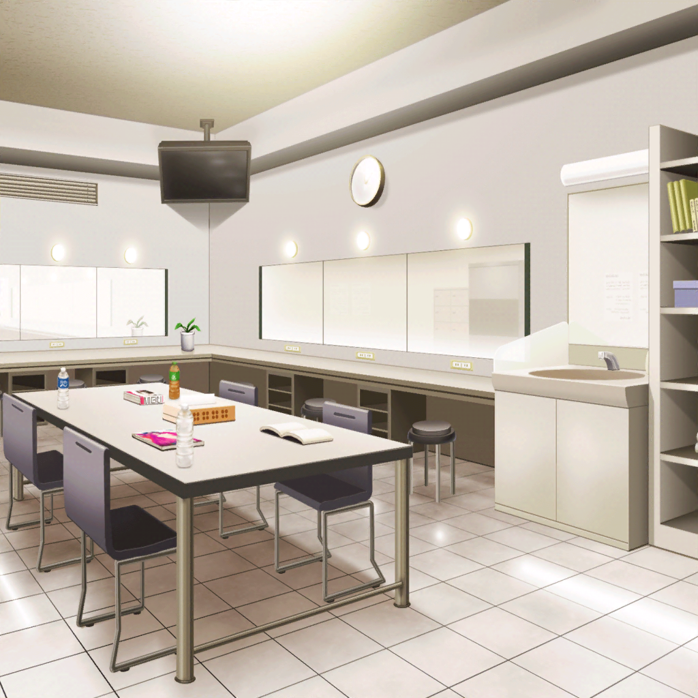
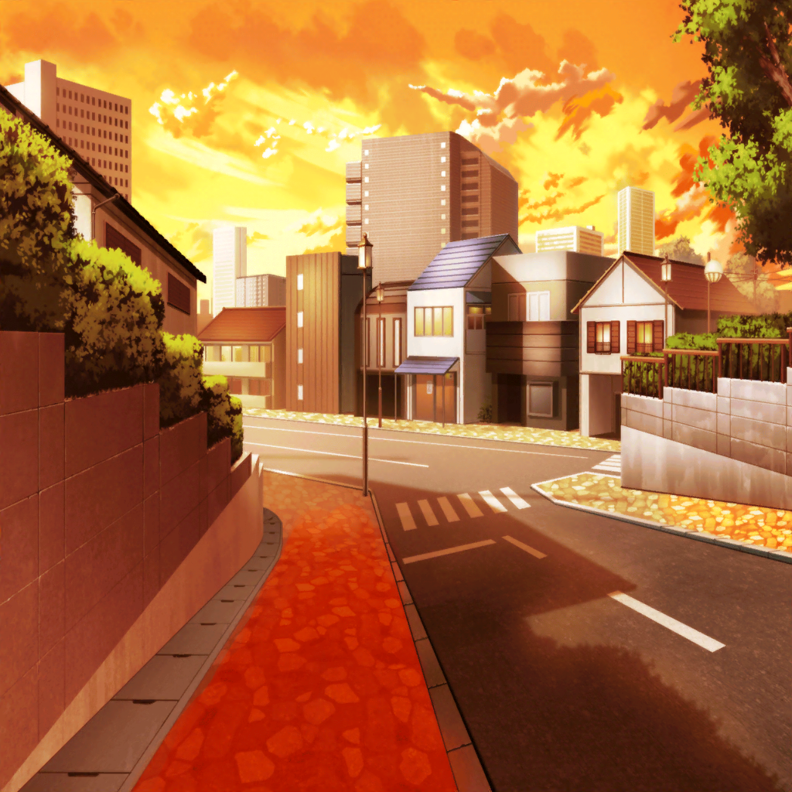
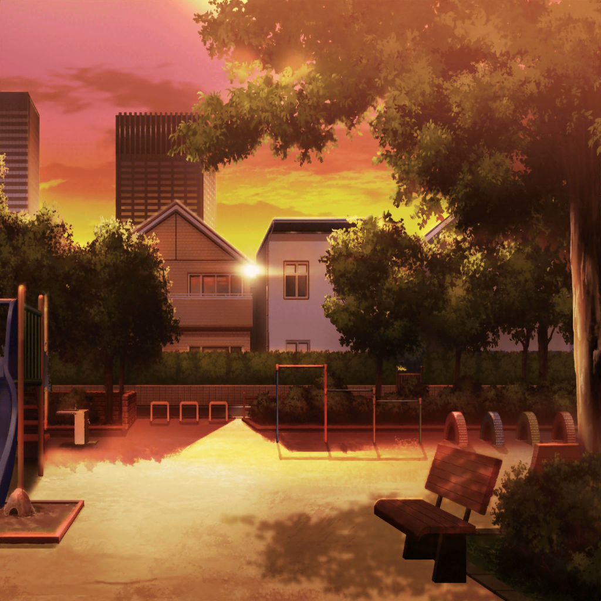

ライブ後
楽屋
ひまり
Afterglow、お先に失礼しまーす！ お疲れ様でしたっ！
スタッフ
お疲れ様でした！ いや～、すごい盛り上がりでしたね～！
また次も、よろしくお願いしますよ！
ひまり
はい！
蘭
モカ、帰るよ……って、なに見てるの？
モカ
見て見て～。
なくしたと思ってた、ひーちゃんのお守りがでてきた～
蘭
どこにあったの？
モカ
なんと！ パーカーのポッケに入ってたのです！
えへへ、よかった～
モカ
……あたし達のユウジョー、守ってくれたのかな～。
このお守りが
蘭
……そう、かもね
モカ
えへへ
ひまり
二人共ー！ 行くよー！
モカ
はーい

帰り道
つぐみ
あっ、この公園……なつかしいね
ひまり
なつかしーっ！ 小さいころ、よくここで遊んでたっけ。
ね、ちょっと寄ってみない？
巴
いいな。せっかくだしちょっと一息ついてこう

公園
ひまり
なつかしいね……私達が遊んでた頃と、あんまり変わってない
つぐみ
ほんとだね！
なんか、こうして変わらないままあるのってうれしいなあ
蘭
変わらない……か。
あたしは、変わらない、変えたくないものが多すぎて
いつの間にか、『変わる』ことが怖くなってた
蘭
だから、将来のことからも、
みんなとぶつかることからも逃げていた。
何もかも今のままでいたい。そう思ってた
蘭
でもケンカして、ぶつかって……
あれがあったからこそ、本当の意味で
みんなのことを信頼できるようになったと思う
巴
今日の演奏は、いつも以上にみんなとの一体感を感じた。
蘭の気持ちもめちゃくちゃ伝わってきたよ
つぐみ
私も！ いつもよりももっと、
音からみんなのことを感じることができて……
すごく、すごく楽しかった！
蘭
あたしは……あたし達は『変われた』。
今日、新しいAfterglowが生まれた
ひまり
新生Afterglow、たんじょー！ だね！
蘭
Afterglowは、あたし達が変わらないことの証であり、
変われることの証。これからも……大切にしていこう
つぐみ
な、なんか、むずかしいけど、がんばるよっ！
巴
ははっ。ま、これからもよろしくってことだな
ひまり
うん！ これからも、ずっとずっと、よろしく！
蘭
うん
巴
さて、新生Afterglow……これからはどうする？
目標とか、決めてみるか？
ひまり
目標、かあ……新曲を作るぞー！ とか？
モカ
もっとエモいのがいいよー。
例えばー……んー、思いつかないけど
蘭
目標……なんだろう
つぐみ
あ、あのっ……！
ひまり
なにか思いついた？
つぐみ
『目指せ、武道館！』とかどうかな？
モカ
つぐ、今、目標の話してる？
つぐみ
ええっ！？ う、うん……そうだよ。あ、あれ！？
なんかヘンな事言っちゃったかな！？
つぐみ
やっぱり、
バンドっていったら武道館っていうか、そういうイメージが……
ひまり
ぷっ……あははははは！
つぐ、スケール大きすぎ……！ でも、いいんじゃない？
巴
武道館、か……。ははっ、いいんじゃないか？
モカ
うん、エモいね～
蘭
……ふふっ。こういう言い出しっぺって、だいたいつぐみだよね
つぐみ
えっ、そうかな！？
蘭
そうだよ。バンドを組もうって言ってくれたのも、ガルジャムに
出ようってみんなを後押ししたのも、今のも……全部つぐみ。
何かのはじまりにはいつもつぐみがいる
ひまり
確かに……！
つぐみ
わ、私はそんなつもりなかったんだけど……え、えへへ……
巴
つぐがいる限り、アタシらのバンドはどんどん前に進んでいけるな
ひまり
ん～～～、
なんか私、Afterglowに無限の可能性を感じてきたっ！！！
やるぞ～～～～！！！
モカ
わー、ひーちゃんの謎のやる気満々キャラ出たよ～
蘭
……これは、くるよ
モカ
だよねー
ひまり
よーっし！ がんばるぞ～！ えい、えい、おー！
一同
……
ひまり
ええっ！？ さすがに今回は全員言うと思ったのに～！？
みんな、変わるんじゃなかったの～！？
モカ
ここは『いつも通り』でいいと思いまーす
巴
ぷっ……ははは……！
蘭
ふふっ……！
つぐみ
ふふふ……っ！
一同
あはははははっ！